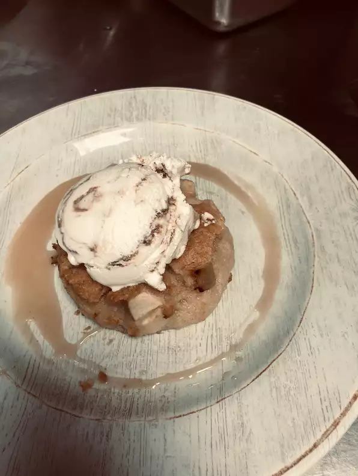

Back
Blonde Apple Brownies

Description:
Moist, cake-like brownie that is perfect for fall. Everyone asks me for this recipe once they've tasted them. Wonderful served warm with vanilla ice cream. Enjoy!
Source: Allrecipes
Ingredients:
- 1 cup salted butter, softened
- 1 cup white sugar
- 1 cup lightly packed light brown sugar
- 2 eggs
- 2 cups all-purpose flour
- 1 teaspoon baking powder
- 1 teaspoon ground cinnamon
- 6 McIntosh apples - peeled, cored, and diced
Cooking Steps:
- Preheat oven to 350 degrees F (175 degrees C). Lightly grease a 9x13-inch baking dish.
- Beat butter, white sugar, brown sugar, and eggs together in a bowl using an electric mixer until smooth and creamy. Beat flour into creamed butter mixture until well combined; add baking powder and beat. Stir cinnamon into batter. Fold apples into batter; spread into the prepared baking dish.
- Bake in the preheated oven until a toothpick inserted in the center comes out with moist crumbs, about 45 minutes.